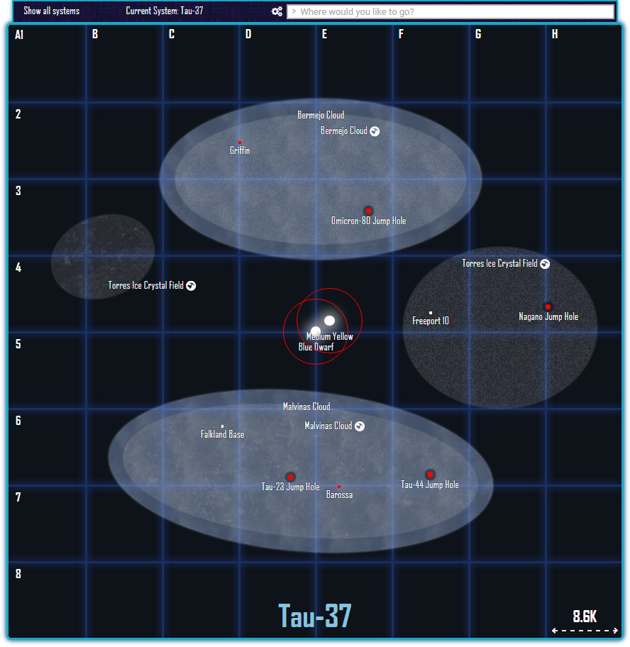
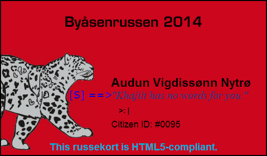

Discovery Navmaps
()
63.400845N, 10.316698E, 218m
projects
Link to this entry

After having had a go at creating a map site for the Freelancer mod Discovery about two years ago, I eventually got rather tired with looking at and updating the old raster screenshots that it provides. The result of this and a few days' weeks of work is one of my newer web projects, which uses JavaScript, jQuery and quite a lot of CSS3 to render much more usable and interactable maps directly from the game files at run time (i.e. page load) without any server-side processing, so the only maintenance it requires is fresh game files to chew on whenever there's a new update out.
The in-development version can more or less be viewed above or at its website, for those who want to click around the Sirius sector for a bit or read some infocards.
D/S Skibladner
()
60.548608N, 11.199622E, 114m
misc
Link to this entryMID
SIDE
MASTER
I first took a recording of the Skibladner's steam engine years ago before I had much more than a compact camera to do it with, and I've been wanting to revisit it ever since - and particularly so after getting some better recording equipment. One of the first ones can be heard here (loud volume warning).
The recording above was made by hand approximately from the location pictured (i.e. the wall in the back), pointing down towards the piston heads. Equipment used was the H6 and SSH-6, as usual.
Instructions on using the Mid/Side decoder may be found in this post.
Hellisheiði geothermal power station
()
64.266142N, 18.815813W, 260m
misc
Link to this entryMID
SIDE
MASTER
One of five recordings taken at the Hellisheiði geothermal power station in Iceland. This particular one was done with the Zoom H6 and a SSH-6 mic module, with the mid microphone pointed down towards the alternator of one of the two 45 MW high pressure turbine generators at Hellisheiði, pictured in the bottom-right of the image above.
Instructions on using the Mid/Side decoder may be found in this post.
In-browser Mid/Side decoding
()
63.431588N, 10.379426E, 3m
projects
Link to this entryFor quite some time now I've wanted a platform for uploading and showcasing my (stereo) sound recordings. As a result of this, I recently started looking into the (relatively) new Web Audio API as it's recently started to gain fairly widespread support in most of the commonly-used mobile and desktop browsers, including the latest versions of Chrome and Firefox (for both platforms).
Using this it is possible to do Mid/Side microphone setup decoding in-browser in real time, allowing the listener to adjust the stereo width of the recording as desired, which is - to say it mildly - a rather useful feature when it comes to posting M/S stereo recordings online. This is due to quite a lot of the point of recording anything in Mid/Side (i.e. the interactivity that arises from the possibility to modify the stereo width post-recording) is lost the moment the raw, M/S-coded recording is mixed down to regular fixed-width stereo.
As seen in the AudioContext connection graph above, the implementation is relatively simple: A HTML5 <audio> element is used as the audio source for a M/S-coded recording, which is then routed through a ChannelSplitterNode, a few GainNodes (which handle the phase inversion and control the per-channel gain) before going into a ChannelMergerNode and finally to a GainNode for the master gain slider. The output of this node is then routed into an AnalyserNode for a bit of FFT action before being pushed to a <canvas> element for rendering.
A demonstration of the current version with gain sliders for the side and mid channels plus the summed master bus may be seen below.
MID
SIDE
MASTER
Adjusting the SIDE slider relative to the MID slider will adjust the stereo width of the output, while adjusting the MASTER slider will adjust the post-MID/SIDE slider gain of the output. Using headphones is strongly recommended.
An interesting thing to note here is that one of the main consequences and/or advantages/drawbacks of recording audio in Mid/Side can be seen on the FFT visualization by reducing the mid level to zero (i.e. dragging the MID slider all the way to the left, or pressing the mute button): The visualizer will show zero for all frequencies, despite there still being sound on the left and right channels. Why is this?
Well. The visualizer is only looking at a (mono) single channel version of the signal; the sum (i.e. the mono signal mentioned earlier) of the two side channels is indeed zero as they are the inverse of each other, and the sum of a wave and its inverse is neccessarily zero. This is important to note, as it has implications for what'll happen if a Mid/Side recording is run through a single speaker or other mono audio source: The side channels will cancel each other out and disappear completely and leave only the mid channel audible in the output.
The recording was made earlier this year, and features the old Skansen bridge in Trondheim (see the entry coordinates) in rain with two local trains passing over near the start and end of the track. It was recorded using the Zoom H6 equipped with a SSH-6 mic module, with the recorder placed directly under the middle of the bridge with the microphone setup angled slightly up towards the train tracks overhead.
Nordens Ark V2015
()
58.438510N, 11.431632E, 58m
misc
Link to this entryIt's fun to see how fast these have grown up since 2013! It's not even all that easy to distinguish between the adults and kids any more at this point, unless you're up for identifying them by their markings.
Uncia Uncia
()
35.647939N, 139.395531E, 165m
misc
Link to this entryProbably one of the more interesting recordings I've done of snow leopard cries; in my experience so far they're usually not quite as vocal as this, so I guess I'll consider myself lucky.
The enclosure does have running water inside it with a fence and a few other things between the mic and... subject producing some warbly effects and distortion. The quality of the H6's MSH-6 mic probably contributes (negatively) to this as well, though, but I'm perfectly happy that the bits with snow leopard in them sound alright compared to what I've found online so far.
KspPy or bust
()
63.417963N, 10.401233E, 41m
projects
Link to this entryAfter getting into cybernetics and control systems this autumn, I started stumbling around for a while trying to find a fun simulation environment to stage some experiments in. I wanted to start making an autopilot for Kerbal Space Program using PID controllers and various other forms of control logic, and initally started looking at keyboard emulation and a few rather roundabout ways for getting data in and out of KSP.
Fortunately, it turns out that there's a much better and well-tested solution out there already: the Telemachus mod! It provides a really nifty API for getting data in and out of the game, requiring barely any setup beyond installing the mod to get it up and running, but there's (unfortunately) not a lot of documentation or help out there for programmatically controlling KSP with it, at least not for Python 3.
Here's a small Python 3 usage example that should help you get started if you're so inclined; it should be simple enough to understand even if you're relatively new to the language (like me).
The important bits here are the fetch(tmvar) and write(tmvar) functions, which get and write data to and from KSP via the Telemachus HTTP API using API query strings such as r.resource[LiquidFuel]. I've personally got most of those in a library that saves me from having to remember all the different query strings, but that's not quite ready for the public just yet; however, the functionality of this minimal usage example is almost exactly the same.
Safe flights, and be careful with the polling/update rate! You will kill the connection if you push it too low, though the exact lower limit will probably depend on your setup.
Tinychart
()
63.400845N, 10.316698E, 218m
projects
Link to this entry
A simple 41px 1.11KB Pokémon type matchup chart. This is actually quite a bit more usable than it looks (provided that you scale it up a bit)! The rows indicate the attacking type, and the columns are the defending type (like on most type charts). It may work for you if you've played the games for years and recognize the types by colour, but still can't fathom the type matchups. Might even be able to fit this on a 3DS for in-battle use.
This is probably almost as small as you can make a type chart; you could technically remove the extra type rows/columns and the grid to get it down to ~21px, but that'd probably render it unreadable in the process.
EDIT: Added a 24px one. Actually works a lot better than the original, in my opinion.
Google Drive web hosting
()
63.395094N, 10.365054E, 129m
misc
Link to this entry
As you may have noticed, this and all the rest of my websites are and have been dependent on iframes for quite some time. The reason for this is rather simple: Almost all of them are hosted on Google Drive, with a bit of jQuery and AJAX here and there providing sparks of dynamic content in my wasteland of static flat HTML files. As you may have guessed by this point, there are quite a few drawbacks to using Google Drive, but for simple, small web sites like this one there are plenty of upsides to it as well.
If you'd like to give it a go yourself - which I've been asked about a few times before - it's really as simple as setting up web hosting could get: Create a new Google Drive folder, right click and set the sharing options on it to "Public on the web", throw a HTML file or two in there (and whatever else you may want accessible online) and access it by heading to:
http://googledrive.com/host/yourfoldersharingid/site.html
And that's pretty much it!
Like I mentioned earlier, however, there's no real way to get a custom domain name on your Drive websites without resorting to a domain name provider that can host an iframe with your Drive website in it like Namecheap (which I'm using) or something similar. That's a rather small drawback for free, simple and always-on web hosting, though. At least it's a lot better and more reliable than my (or your) poor, old, chronically broken laptop server if all you need is somewhere to throw your (mostly) static HTML, CSS and image files.
Using Skype v4.2.0.187
()
63.400845N, 10.316698E, 218m
misc
Link to this entry
Find your IP address
Edit: As of 18.08.2014, it seems like Microsoft has finally pulled the plug on v4.2.0.187; it is no longer be able to log in at all, and there is no known fix for it at this time, unfortunately.
Sometime in 2013, Microsoft silently made the Skype login servers provide invalid IP details to the v4.2.0.187 client (download), essentially making all fresh installs of this Skype version unable to log in any more.
The solution to this "feature" is luckily rather simple: Provide valid IP details yourself.
First, attempt to log in on your new copy of Skype v4.2.0.187 once. It will fail, so don't worry about that just yet.
After that, navigate to Skype's shared.xml file in "%appdata%/Skype" (type that into the "Run" window; Windows key + R) and open it in Notepad. Take a backup of it as well, just in case anything goes wrong.
Then use Notepad's "Find" function (ctrl + F) to locate "<LastIP>". Replace the number in between <LastIP> and </LastIP> with the number you get when you enter your IP address into the textbox above after clicking "Convert". If those two tags don't exist in your shared.xml file, you'll have to add them yourself after the opening <Connection> tag. Directly after it should work.
Save the file after ensuring that you've only replaced the number enclosed by the <LastIP> and </LastIP> tags, without overwriting any of the <s or >s.
Start Skype; enjoy your (smoke)s and blinking text.
Not A Team Rocket Announcement
()
58.438510N, 11.431632E, 58m
misc
Link to this entryPlot twist: It's actually a snow leopard announcement.
Team Rocket Announcement
()
63.400845N, 10.316698E, 220m
team_rocket
Link to this entry...Uh... um. Testing! Testing 1,2,3... We're the amazing Team Rocket! ...Uh... um. Testing! Testing 1,2,3... We're the amazing Team Rocket! ...Uh... um. Testing! Testing 1,2,3... We're the amazing Team Rocket! ...Uh... um. Testing! Testing 1,2,3... We're the amazing Team Rocket! ...Uh... um. Testing! Testing 1,2,3... We're the amazing Team Rocket! ...Uh... um. Testing! Testing 1,2,3... We're the amazing Team Rocket! ...Uh... um. Testing! Testing 1,2,3... We're the amazing Team Rocket!
(In other news, I've gone through another (!) revision of my home page. Who would have thought that one could go through five hosting solutions and layouts in less than two years without actually having any content to display!)
"Russekort"!
()
63.395094N, 10.365054E, 129m
projects
Link to this entry

This is a small bit of (nerdy) web design work that I did (mostly) back in November in preparation for May 2014. It's a form of contact card which includes the source code for rendering the code for the actual card in a browser (though I admittedly had to resort to a few cheats, particularly for mobile browser compatibility).
The QR code leads to this companion site (in Norwegian), which enabled mobile users - i.e. most people who were going to see the card - to see a rendered version of it in their web browser, along with a few explanations.
One-off websites
()
63.400845N, 10.316698E, 218m
projects
Link to this entryThere have been a few of these over the years, and there are probably quite a few more to come. The first one is perhaps the most stupid one, and even has it's own domain name registered (for now). Not bad for a site based off two rather fun hours on the TwitchPlaysPokemon stream. The other two are (were?) rather more useful, I suppose.
Teachy TV Russeknuter for Trondheim, 2014 Discovery Mod NavmapsMozzi/Arduino synthesizer
()
63.400845N, 10.316698E, 218m
projects
Link to this entryThis is a small (currently) one-oscillator USB MIDI-controlled synthesizer sketch made for the Teensy++ 2.0 microcontroller (which I'm a rather large fan of) utilizing the Mozzi library (which it requires). The USB MIDI version uses no external parts except for a few wires to connect it to a mixer/amp, and has a basic LFO, low-pass filter, an AD envelope and, of course, a single sine/square/saw/triangle wave oscillator.
Please see the attached Arduino sketch below for more information.
OneOscSynth6.0 sketchDiscovery Search Engine
()
63.400845N, 10.316698E, 218m
projects
Link to this entryA small Google Custom Search wrapper for the Discovery mod and community site(s). It uses promotions and a few other Google CSE goodies to help improve searches, including a large search term suggestion database.
Discovery Search EngineAbout
()
63.421474N, 10.386919E, 12m
about?
Link to this entryThat timestamp may be a bit off, unfortunately. Probably. I think I remember something about it being during the night, at least.
To keep things short: I'm a web design enthusiast/n00b, snow leopard enthusiast and a hobbyist ambient audio recorder. Plus a few other things.
This is my home page that I'm going to be using to post projects I'm working on, mostly for my own enjoyment so I've got some documentation of what I've done so far, and so I can get some of it up on the 'net in case I feel like showing it to somebody one day.
It is currently hosted on Google Drive GitHub Pages (29.08.2015), running on a Glorious Flat File CMS (tm) aided by quite a lot of hand-crafted HTML5, CSS3, JS plus some external libraries (jQuery, mainly) to keep things manageable until I get it up and running on a home server again. Looking forward to that one.
If you need to contact me, the "Facebook" and "Skype" links up on the navigation header would perhaps be good starting points.
(You'll just have to trust me on that one. Unless you're one of the few Lynx/screen reader users out there, of course. Hi!)
Disclaimers and credits: Pokémon, the team sprites and all related content belongs to GameFreak/Nintendo. The code for the slider, adaptive background and dominant colour finder belong to their respective creators. Everything else here was created by or otherwise belongs to me, unless anything else is explicitly stated or if the content is used under the terms of a license that does not require direct attribution.
scroll up